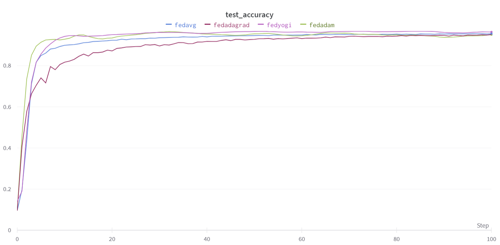

Flower를 이용한 연합학습 실험
클라이언트의 데이터 품질이 서로 다를 때, 모델을 단순히 합치는 것만으로 좋은 전역 모델을 만들 수 있을까? Flower로 집계 전략을 비교하고, 잘못된 라벨이 포함된 클라이언트의 업데이트를 제어하는 방법을 실험했습니다.
- 실험: 집계 전략 4종과 정상·라벨 오류 클라이언트
- 결과: 노름 필터링·클리핑은 해당 실험에서 개선 없음



문제와 맥락
연합학습에서는 각 클라이언트가 자신의 데이터로 학습하고 서버가 모델 업데이트를 집계합니다. 데이터가 한곳에 모이지 않는 만큼, 일부 클라이언트의 학습 데이터가 부정확하면 그 영향이 전역 모델에도 전달될 수 있습니다.
프로젝트는 두 질문을 나누어 다뤘습니다. MNIST에서는 서버의 집계 전략에 따른 학습 차이를 비교하고, CIFAR-10에서는 정상 라벨과 일부 라벨을 섞은 클라이언트를 함께 참여시켜 데이터 품질의 영향을 살폈습니다.
수행 역할
김지효·김성철·이도현으로 구성된 수업 팀 프로젝트에 참여했습니다. 팀 단위로 Flower 기반 서버·클라이언트 실험과 집계 전략 비교, 데이터 품질에 따른 업데이트 제어를 수행했습니다.
접근 방법
집계 전략 비교
서버가 초기 가중치를 전달하면 클라이언트는 로컬 학습을 수행하고 업데이트를 반환합니다. 서버는 업데이트를 집계한 뒤 별도 평가 데이터로 손실과 정확도를 계산합니다. 이 과정을 반복하며 FedAvg, FedAdagrad, FedAdam, FedYogi를 비교했습니다.
데이터 품질을 달리한 클라이언트
CIFAR-10 실험은 정상 데이터 클라이언트 5개와 일부 라벨을 무작위로 바꾼 클라이언트 5개로 구성했습니다. 이미지 자체보다 학습 신호의 정확성이 달라지도록 설정했습니다.
업데이트 제어
모델 가중치의 노름을 이용한 필터링과 로컬 학습의 그래디언트 노름 클리핑을 시험했습니다. 클라이언트에는 SGD 학습과 클리핑 옵션을, 서버에는 집계 전략 선택과 전역 모델 평가를 구현했습니다.
적용 범위
실험 결과와 한계
MNIST 실험에서 FedAdam과 FedYogi는 FedAvg보다 빠르게 수렴하거나 더 높은 성능을 보였고, FedAdagrad는 더 낮은 성능을 보였습니다.
CIFAR-10 실험의 전역 정확도는 정상 업데이트를 사용한 경우 64.13%, 오류가 포함된 업데이트를 함께 사용한 경우 59.23%였습니다. 필터링과 클리핑은 이 실험에서 성능을 개선하지 못했습니다. 데이터 품질 문제를 업데이트 크기만으로 해결하기 어려웠다는 점도 주요 결과입니다.
수치는 수업 프로젝트의 실험 조건에서 얻은 결과입니다. 실제 기관 간 운영과 개인정보 보호 수준은 평가 범위에 포함하지 않았습니다.